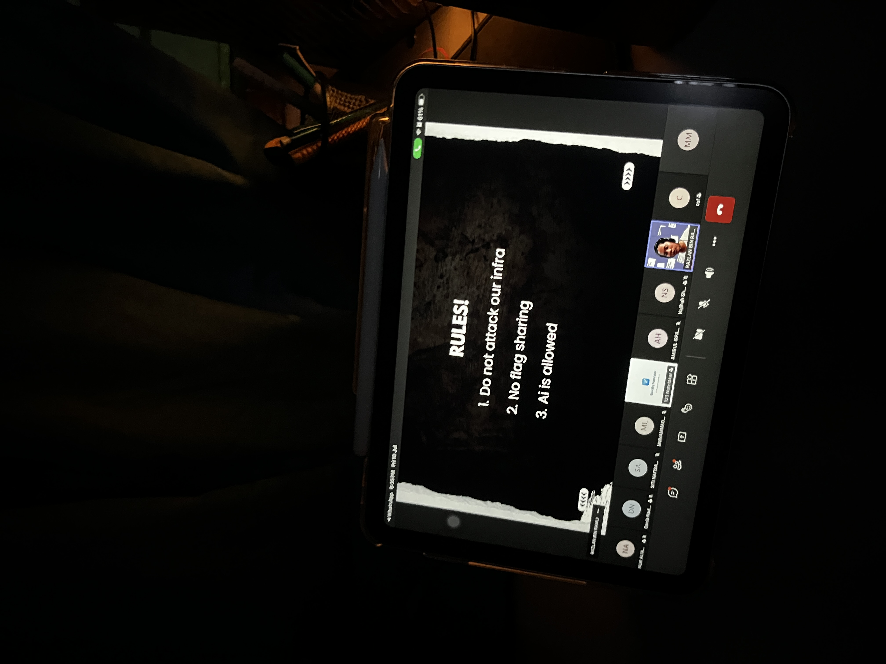

Operation Cyberheroes: Internal CTF 2026
Recently, our team participated in the Operation Cyberheroes Internal CTF 2026, hosted by the UiTM Cyberheroes Club. As relative newcomers to cybersecurity, our primary goal was not merely winning, but accumulating practical experience—knowing that real-world exposure drives long-term growth.
Throughout the competition, my teammates (Adib and Naufal) and I pushed our limits to tackle every challenge. Through solid collaboration, we successfully secured a spot in the Top 10.
For me, every CTF is a key learning opportunity. Beyond the scoreboard, my focus is mastering challenge patterns, evaluating difficulty levels, discovering essential Linux and Windows tools, and sharpening our strategy for future events.
